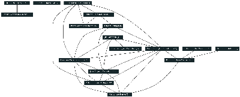

[
Membros
|
Produção bibliográfica
|
Produção técnica
|
Patente e Registro
|
Produção artística
|
Orientações
|
Projetos
|
Prêmios
|
Eventos
|
Grafo de colaborações
|
Mapa de geolocalização
]
Produção bibliográfica
Artigos completos publicados em periódicos
(938)
Livros publicados/organizados ou edições
(17)
Capítulos de livros publicados
(31)
Textos em jornais de notícias/revistas
(14)
Trabalhos completos publicados em anais de congressos
(772)
Resumos expandidos publicados em anais de congressos
(73)
Resumos publicados em anais de congressos
(312)
Artigos aceitos para publicação
(4)
Apresentações de trabalho
(279)
Demais tipos de produção bibliográfica
(31)
Total de produção bibliográfica
(2471)
Produção técnica
Produtos tecnológicos
(1)
Trabalhos técnicos
(18)
Demais tipos de produção técnica
(39)
Total de produção técnica
(58)
Patente e Registro
Nenhum item achado nos currículos Lattes
Produção artística
Total de produção artística
(2)
Orientações
Orientações em andamento
Supervisão de pós-doutorado
(10)
Tese de doutorado
(21)
Dissertação de mestrado
(24)
Iniciação científica
(28)
Orientações de outra natureza
(1)
Total de orientações em andamento
(84)
Supervisões e orientações concluídas
Supervisão de pós-doutorado
(30)
Tese de doutorado
(60)
Dissertação de mestrado
(92)
Monografia de conclusão de curso de aperfeiçoamento/especialização
(1)
Trabalho de conclusão de curso de graduação
(13)
Iniciação científica
(169)
Orientações de outra natureza
(31)
Total de orientações concluídas
(396)
Projetos de pesquisa
Total de projetos de pesquisa
(75)
Prêmios e títulos
Total de prêmios e títulos
(35)
Participação em eventos
Total de participação em eventos
(460)
Organização de eventos
Total de organização de eventos
(90)
Grafo de colaborações

Mapa de geolocalização
Legenda
Membro (orientador)
Pesquisador com pós-doutorado concluído e ID Lattes cadastrado no currículo do supervisor
Aluno com doutorado concluído e ID Lattes cadastrado no currículo do orientador
Data de processamento: 03/03/2014 03:36:59